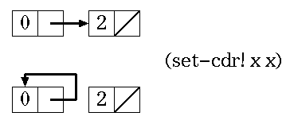

リスト処理関数
ここでは，以下に挙げたリストを扱う基本的な関数を説明する．
car,cdr
それぞれリストのcar部,cdr部を返す関数．
(define x '(1 2 3 4)) > (car x) 1 > (cdr x) (2 3 4)carはリストの先頭の要素，cdrはリストの先頭の要素を除いたリストを返すと考 えてもよい．これらに加えて，2番目の要素を返すcadr，3番目以降要素を含むリ ストを返すcddr，先頭の要素がリストであるときに，その先頭の要素を返すcaar などの関数など，4つまでのaかdを含む関数がシステムに用意されている．
> (define x '((1 2 3) 4 5 6)) x > (car x) (1 2 3) > (cdr x) (4 5 6) > (cddr x) ;; = (cdr (cdr x)) (5 6) > (cdddr x) ;; = (cdr (cdr (cdr x))) (6) > (cddddr x) ;; = (cdr (cdr (cdr (cdr x)))) () > (cadr x) ;; = (car (cdr x)) 4 > (caar x) ;; = (car (car x)) 1 > (cdar x) ;; = (cdr (car x)) (2 3) > (cadar x) ;; = (car (cdr (car x))) 2 > (caddar x) ;; = (car (cdr (cdr (car x)))) 3
cons
2つの引数をとり，第一引数をcar部 ，第二引数をcdr部にもつリ ストを返す関数．システムは新しいconsセルを一つ用意して，そのcar部，cdr部 がそれぞれ第一，第二引数を指し示すようにする．
> (define x '(1 2 3)) x > (define y 0) y > (define z (cons y x)) z > z (0 1 2 3) > (car z) 0 ;; 関数eq?は，2つの引数が同じconsセルを指している場合には#tを返す > (eq? (cdr z) x) #t ;; 第二引数がアトムである場合の例 > (cons 'a 'b) (a . b) ;; 第二引数がドット対である場合の例 > (cons 'a '(b . c)) (a b . c)
null?, list?, pair?
これらは，1つの引数をとり，真偽値を返す述語 である．
- null?
- 引数が空リスト(null list)かどうかを判定する．
> (null? '()) #t > (null? '(a)) #f
- list?
- 引数がリストかどうかを判定する．
> (list? 'a) #f > (list? '(a b)) #t > (list? '(a . b)) ;; 最後の要素がnullでない場合，list?は#fを返す． #f > (list? '()) ;; 空リストもリストである． #t
- pair?
- 引数がドット対かどうかを判定する．
> (pair? 'a) #f > (pair? '(a b)) #t > (pair? '(a . b)) #t > (pair? '()) ;; 空リストはアトムであり，ドット対ではない． #f
set-car!, set-cdr!
それぞれ，第一引数にドット対をとり，そのcar部，cdr部を第二引数で指定され たデータに置き換える関数である．これらの関数では，既にあるデータを書き換 えるため，副作用が起きることに注意が必要である．
> (define x '(1 2)) x > (define y '(3 4 5)) y > (define z (cons x y)) z > z ((1 2) 3 4 5) > (set-car! x 0) ;; xのcarを0に置き換える． (0 2) > x (0 2) > z ((0 2) 3 4 5) ;; zのcarはxであり，zもset-car!の影響を受ける． > (set-cdr! y '(2 1)) ;; yのcdrを(2 1)に置き換える． (3 2 1) > y (3 2 1) > z ((0 2) 3 2 1) ;; set-car!と同様にこの場合も副作用がある．
(set-cdr! x x)を実行すると，xは無限巡回リストとなり，システムは停止しなくなる．
> x (0 2) > (set-cdr! x x) (0 0 0 0 0 0 0 0 0 0 ..... ;; 強制的に実行を中断しない限り止まらない．

append
引数として与えられた(任意個の)リストを連結したリストを返す関数．appendは 新たなconsセルを用いて，連結されたリストを新たに生成するため，副作用はな い．
> (define x '(1 2)) x > (define y '(3 4 5)) y > (define z '(6 7)) z > (append x y z) (1 2 3 4 5 6 7)
list
引数として与えられた(任意個の)データを並べたリストを返す関数．副作用はない．
> (define x 1) x > (define y '(2 3 4 5)) y > (define z '(6 7)) z > (list x y z) (1 (2 3 4 5) (6 7))